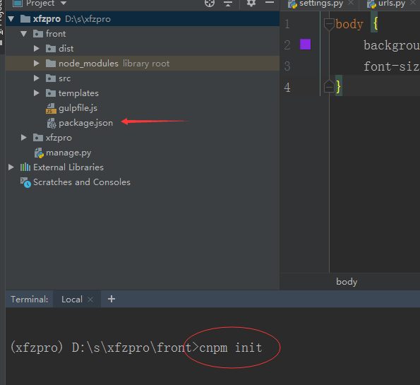
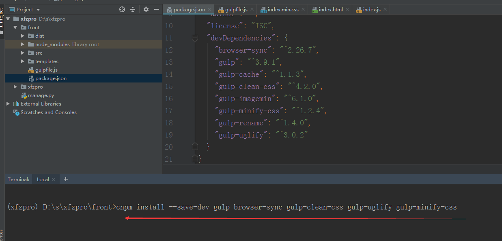
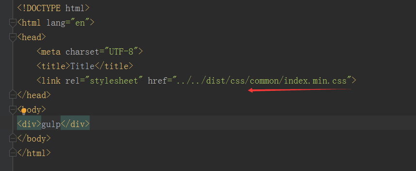

一、安装node
nodejs下载地址：https://nodejs.org/
nodejs自带npm模块管理器，安装完成之后打开dos命令窗口输入 node -v就能查看nodejs是否安装成成功
由于npm安装module太慢，建议使用淘宝镜像：npm install cnpm -g --registry=https://registry.npm.taobao.org
安装完成，查看cnpm -v
二、安装gulp
1，gulp安装分为全局安装和局部安装
首先进行全局安装：npm install gulp -g
2，新建项目目录，并且进入到该项目，初始化该项目
cnpm init

执行命令后，可以一路回车，初始化后，会生成package.json文件
3，局部安装gulp，以及其他插件
执行此命令：cnpm install --save-dev gulp browser-sync gulp-clean-css gulp-uglify gulp-minify-css
需要的插件都以这种方式进行安装，安装完成之后，可以在package.json文件看到

4，项目目录下新建gulpfile.js文件
全部的代码如下所示
var gulp = require("gulp")
var cssmin = require("gulp-clean-css")
var uglify = require("gulp-uglify")
var bs = require("browser-sync").create()
var cache = require("gulp-cache")
var imagemin = require("gulp-imagemin")
var rename = require("gulp-rename")
var path = {
'html':'./templates/**/*.html',
'css':'./src/css/**/*.css',
'js':'./src/js/*.js',
'images':'./src/images/*.*',
'css_dist':'./dist/css/',
'js_dist':'./dist/js/',
'images_dist':'./dist/images/'
}
//解压html
gulp.task("html", function () {
gulp.src(path.html)
.pipe(bs.stream())
})
//解压css
gulp.task("css", function () {
gulp.src(path.css)
.pipe(cssmin())
.pipe(rename({
"suffix":".min"
}))
.pipe(gulp.dest(path.css_dist))
.pipe(bs.stream())
})
//解压js
gulp.task("js", function () {
gulp.src(path.js)
.pipe(uglify())
.pipe(rename({
"suffix":".min"
}))
.pipe(gulp.dest(path.js_dist))
})
//解压images
gulp.task("images", function () {
gulp.src(path.images)
.pipe(cache(imagemin()))
.pipe(gulp.dest(path.images_dist))
.pipe(bs.stream())
})
//定义监听任务
gulp.task("watch", function () {
gulp.watch(path.css, ['css']),
gulp.watch(path.js, ['js']),
gulp.watch(path.html, ['html']),
gulp.watch(path.images, ['images'])
})
//启动服务
gulp.task("bs", function () {
bs.init({
'server': {
'baseDir': './'
}
})
})
//定义默认任务
gulp.task("default", ['bs', 'watch'])
项目根目录，执行命令：gulp，会自动打开浏览器，重新输入连接：http://localhost:3000/templates/common/index.html
修改index.html里面的内容，此时有两种方式：
a. 修改文件后，Ctrl+s保存文件
b. 修改文件后，直接点击浏览器
浏览器就会自动刷新
注意点：index.html引入的css文件，需要是解压之后的文件
